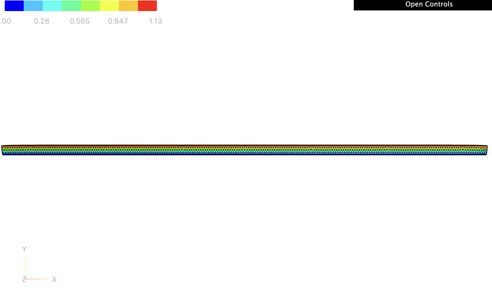
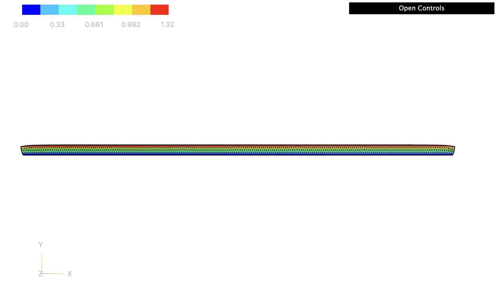
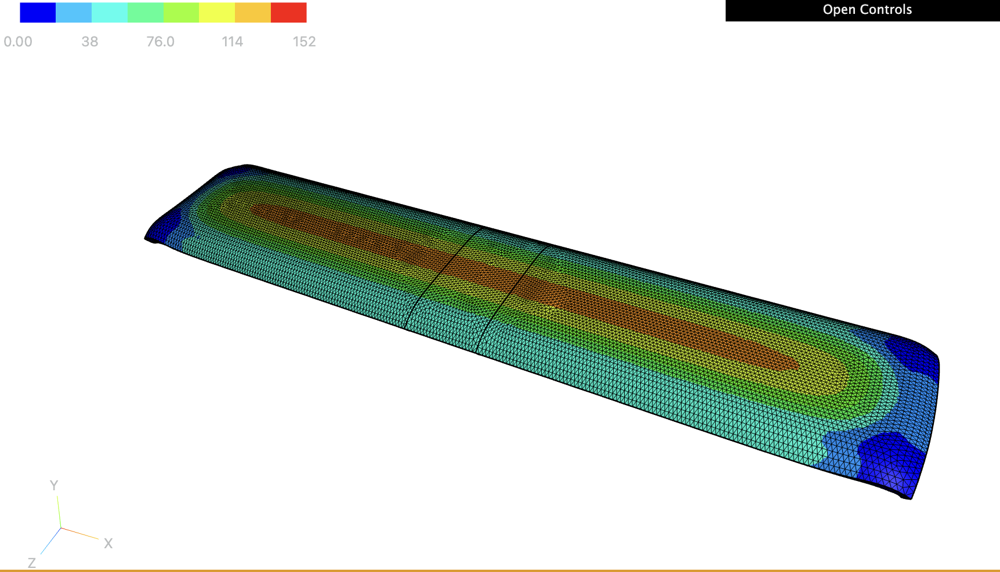
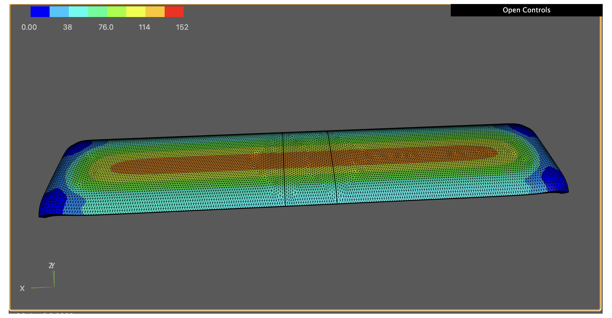
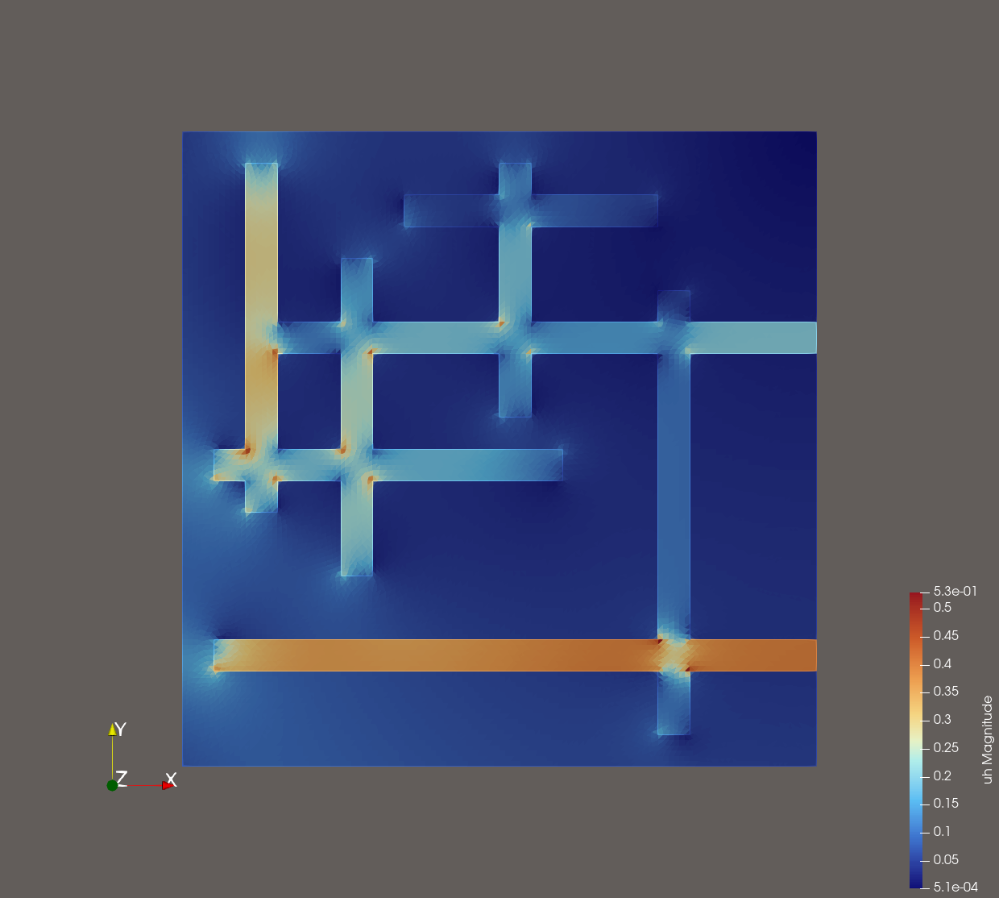
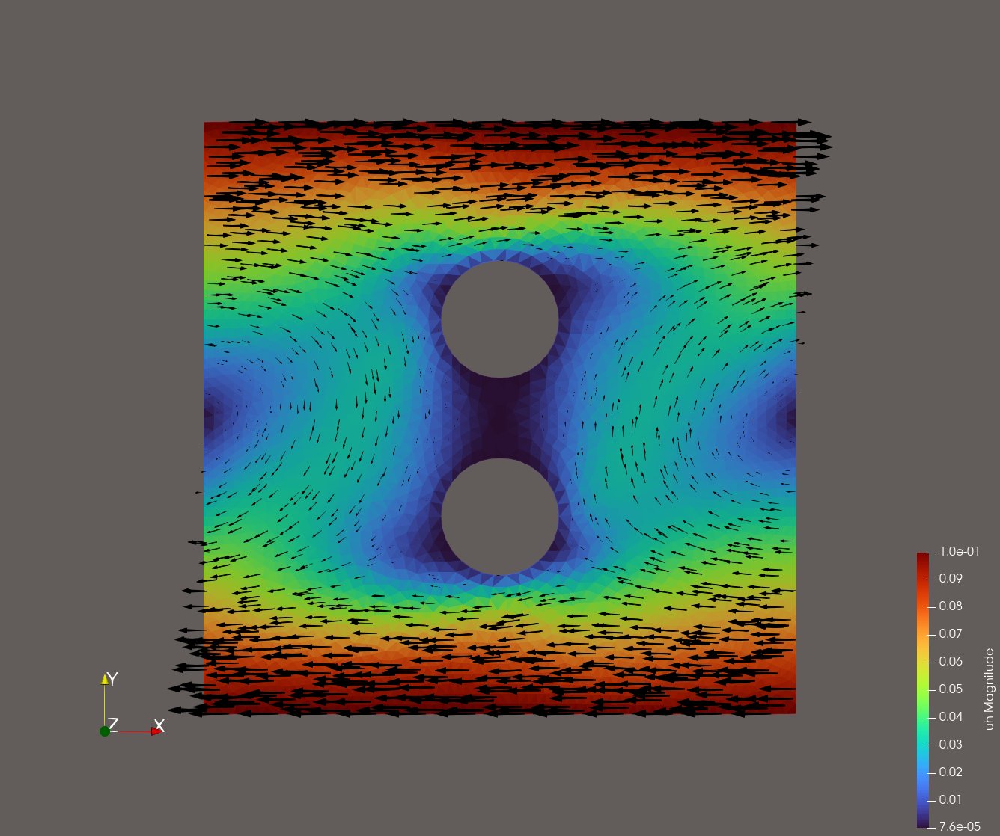

Pedro Hernández-Llanos, Ph.D.
Welcome to my profile! I am a pure and applied mathematician whose research focuses on the interaction of the Calculus of Variations, Partial Differential Equations (PDEs), and Solid Mechanics, with applications to Materials Science and Continuum Mechanics. The use of variational methods is a common theme throughout my work.
Specifically, I specialize in the Homogenization of problems arising in the context of PDEs with Thin structures and Multistructures. I am interested in developing mathematical theories for the behaviour of new materials via simultaneous homogenization and dimension reduction (multiscale convergence, $\Gamma$-convergence, and the periodic unfolding method) by combining variational techniques, operator theory, and geometric measure theory. These techniques find direct applications in Mechanical and Electrical Engineering, as well as Fluid Flow, to name a few.
Alongside my theoretical research, I have experience in Computational Mechanics and Numerical Methods for PDEs, particularly the Finite Element Method (FEM). I have worked with scientific computing tools including Python, Matlab, Julia, and the finite element software NGSolve, applying numerical techniques to the simulation and analysis of complex physical systems. My current interests also include computational modeling of nonlinear materials and soft matter systems, where analytical and numerical approaches are combined to investigate stability phenomena and multiscale behavior.
I am currently a Guest Postdoctoral Researcher with Prof. Sebastian Throm in the Mathematical Modelling and Analysis Group within the Department of Mathematics and Mathematical Statistics at Umeå University, Sweden.
🔬 Research Interests
My research addresses the development of new theories for simultaneous homogenization and dimension reduction using techniques from the calculus of variations, operator theory, and geometric measure theory. These theories have direct applications in:
- Solid Mechanics and Materials Science.
- Mechanical, Electrical Engineering, and Fluid Flow.
- Nonlinear elasticity models, poroelastic plates, magnetoelastic structures, and junctions of ferroelectric materials.
📝 Selected Publications
Peer-Reviewed Journals
-
M. Bužančić, P. Hernández-Llanos, I. Velčić, and J. Žubrinić, “Poroelastic plate model obtained by simultaneous homogenization and dimension reduction,” Journal of Evolution Equations, vol. 26:12, pp. 1–88, 2026.
Main contributions
The starting point of our analysis is a coupled system of linear elasticity and Stokes equation. We consider two small parameters: the thickness h of the thin plate and the pore scale ε(h). The obtained model generalizes the poroelastic plate model derived by A. Mikelić et. al. in 2015.
-
L. Carrero and P. Hernández-Llanos, “Kirchhoff-type equations involving the fractional (p, q)−laplacian,” Journal of Mathematical Analysis and Applications, vol. 558, 130449, pp. 1–15, 2026.
Main contributions
Using variational methods, we establish the existence of at least two weak solutions. The first is obtained via direct minimization and the second by the Mountain Pass Theorem.
-
T. Durante, L. Faella, P. Hernández-Llanos, and R. Prakash, “A homogenized bending shell theory for multiscale materials from 3D nonlinear elasticity,” Journal of Elasticity, 2025.
Main contributions
We combine homogenization and dimension reduction to derive shell theories from 3D nonlinear elasticity with three small parameters: two material scales and the thickness.
-
P. Hernández-Llanos, “Asymptotic analysis of a junction of hyperelastic rods,” Asymptotic Analysis, vol. 126, no. 3-4, pp. 303–322, 2022.
Main contributions
I obtain a 1D asymptotic model for a junction of thin hyperelastic rods using Γ-convergence, showing weak convergence in Sobolev spaces.
-
L. Carbone, A. Gaudiello, and P. Hernández-Llanos, “T-junction of ferroelectric wires,” ESAIM: Mathematical Modelling and Numerical Analysis (ESAIM: M2AN), vol. 54, no. 5, pp. 1429–1463, 2020.
Main contributions
Analysis of junction phenomena for orthogonal joined ferroelectric wires. We show that while the limit problems remain non-convex, the nonlocality disappears.
-
P. Hernández-Llanos, Y. Quintana, and A. Urieles, “About extensions of generalized apostol-type polynomials,” Results in Mathematics, vol. 68, pp. 203–225, 2015.
Main contributions
New results concerning extensions of generalized Apostol-type polynomials, connecting them with Stirling numbers and Jacobi polynomials.
Under Review / Preprints
- Stability surface for confined hydrogel layer on substrates (with D. Henao, C. Roman, and X. Lamy) – (2026, To be submitted to SIAM J. Appl. Anal.).
- Junction of ferroelectric thin cylinders (with L. Faella and R. Prakash) – Submitted to ESAIM: COCV.
- Homogenized moderately wrinkled shell theory from 3d koiter's linear elasticity (with R. Mahadevan and R. Prakash) – Submitted to Mathematical Models and Methods in Applied Sciences.
🎓 Education
-
Ph.D. in Mathematics | Universidad de Concepción, Chile (2015 – 2020)
Thesis: “Variational limits of problems in junction domains for Ferroelectric and Hyperelastic materials by reduction of dimension”
Supervisors: Prof. Rajesh Mahadevan, Prof. Ravi Prakash, Prof. Antonio Gaudiello, and Prof. Luciano Carbone.
Funding: National Agency for Research and Development of Chile (ANID), Doctoral Fellowship.
Honors: Grade 4.7/5.0 (1st in thesis, 2nd overall). -
M.Sc. in Mathematical Sciences | Universidad del Atlántico, Colombia (2011 – 2014)
Thesis: “On new families of generalized Apostol-type polynomials and their properties”
Supervisor: Prof. Alejandro Urieles Guerrero. -
Bachelor’s Degree in High School Education (Major in Mathematics) | Universidad del Atlántico, Colombia (2005 – 2010)
Honors: Grade 4.34/5.0 (1st overall).
Awards: Undergraduate prize for best student of promotion with M.Sc. Fellowship.
💼 Academic Trajectory and Projects
-
Guest Postdoctoral Researcher | Umeå University, Sweden (2026 – Present).
Research on the derivation of the amplitude equation for the space-fractional Swift-Hohenberg equation via evolutionary $\Gamma$-convergence alongside Prof. Sebastian Throm. -
Postdoctoral Researcher | Universidad de O'Higgins (UOH), Chile (2023 – 2026).
Principal Investigator of the project Fondecyt Postdoctoral ANID N° 3230202, focused on two-dimensional models of thin structures with magnetoelasticity, poroelasticity, and rigid gel properties alongside Prof. Duvan Henao. -
Postdoctoral Research Associate | University of Zagreb, Croatia (2021 – 2022).
Project funded by the Croatian Science Foundation (HRZZ) centered on poroelastic plates via simultaneous homogenization and dimension reduction alongside Prof. Igor Velčić.
🛠️ Scientific Computing and Tools
I have experience developing scientific code applied to solving and simulating PDEs, variational methods, and dimensional reduction problems:
- Languages and Software: Advanced in Python, FreeFem++, FEniCS, Matlab, Julia, R, Mathematica, and Wolfram Language.
- Scientific Typography: Professional editing and typesetting in LaTeX and TeX.
💻 Codes
Selected numerical simulations developed to solve and validate the variational and PDE models arising in my research, implemented in Python, FreeFem++, FEniCS, Matlab, Julia, R, Mathematica, and Wolfram.
GelStableConfiguration.py
Finite-element computation of stable equilibrium configurations of a confined hydrogel layer bonded to a rigid substrate, solved via an incremental softening (continuation) scheme with Newton's method under a penalty-based non-penetration constraint.

Successful computation of the stable configuration for the gel for $L=90.00$ mm, $d=1.62$ mm, $\phi_0=0.20$ and $\overline{\mu}=-0.0005$ under zero-displacement Dirichlet boundary conditions ($\mathbf{u}=\mathbf{0}$) along the bonded and debonded interfaces, supplemented by a penalty-based non-penetration condition ($y+u_y \ge 0$) at the bottom surface. The nonlinear problem is solved via an incremental softening scheme across 16 load steps. Newton's method is executed with a convergence tolerance of tol $=10^{-3}$ (and tol $=10^{-6}$ for the final step), allowing a maximum of 100 Newton iterations per step and up to 500 iterations for the final stage. The color bar is adjusted to show in red the magnitude of the maximum displacement, which is $1.13$ mm. This corresponds to the solution obtained when using the swelling equilibrium of the gel with a shear modulus of $0.1372$ MPa as the initial approximation for a gel with shear modulus of $0.13721349978333722$ MPa.

Successful computation of the stable configuration for the gel for $L=90.00$ mm, $d=1.62$ mm, $\phi_0=0.20$ and $\overline{\mu}=-0.003$ under zero-displacement Dirichlet boundary conditions ($\mathbf{u}=\mathbf{0}$) along the bonded and debonded interfaces, supplemented by a penalty-based non-penetration condition ($y+u_y \ge 0$) at the bottom surface. The nonlinear problem is solved via an incremental softening scheme across 16 load steps. Newton's method is executed with a convergence tolerance of tol $=10^{-3}$ (and tol $=10^{-6}$ for the final step), allowing a maximum of 100 Newton iterations per step and up to 500 iterations for the final stage. The color bar is adjusted to show in red the magnitude of the maximum displacement, which is $1.32$ mm. This corresponds to the solution obtained when using the swelling equilibrium of the gel with a shear modulus of $0.1372$ MPa as the initial approximation for a gel with shear modulus of $0.13721349978333722$ MPa.
gels-testCluster-NoChemicalPotential.py
Finite-element computation of the energy density of a confined hydrogel layer bonded to a rigid substrate, solved via an incremental softening (continuation) scheme with Newton's method under a penalty-based non-penetration constraint.

Successful computation of the energy density for a gel for $L=90.00$ mm, $d=1.62$ mm, $w=15.00$ mm, $\phi_0=0.20$ and $\overline{\mu}=0$ under zero-displacement Dirichlet boundary conditions ($\mathbf{u}=\mathbf{0}$) along the bonded and debonded interfaces, supplemented by a penalty-based non-penetration condition ($y+u_y \ge 0$) at the bottom surface. The nonlinear problem is solved via an incremental softening scheme across 16 load steps. Newton's method is executed with a convergence tolerance of tol $=10^{-3}$ (and tol $=10^{-6}$ for the final step), allowing a maximum of 100 Newton iterations per step and up to 500 iterations for the final stage. The color bar is adjusted to show in red the magnitude of the maximum density energy, which is $152$ mJ.

Successful computation of the energy density for a gel for $L=90.00$ mm, $d=1.62$ mm, $w=15.00$ mm, $\phi_0=0.20$ and $\overline{\mu}=0$ under zero-displacement Dirichlet boundary conditions ($\mathbf{u}=\mathbf{0}$) along the bonded and debonded interfaces, supplemented by a penalty-based non-penetration condition ($y+u_y \ge 0$) at the bottom surface. The nonlinear problem is solved via an incremental softening scheme across 16 load steps. Newton's method is executed with a convergence tolerance of tol $=10^{-3}$ (and tol $=10^{-6}$ for the final step), allowing a maximum of 100 Newton iterations per step and up to 500 iterations for the final stage. The color bar is adjusted to show in red the magnitude of the maximum density energy, which is $152$ mJ.
DarcyPrimal2d.edp
Purpose of the code: Numerical verification of the finite element approximation for a two-dimensional Darcy problem in primal formulation. The code solves the problem using continuous piecewise-linear ($P_1$) finite elements, compares the numerical solution with the exact analytical solution, and evaluates the $H^1$-error and convergence rate under successive mesh refinements.
Analytical pressure field $p(x,y)=\cos(\pi x)\sin(\pi y),$ used as the reference solution for the two-dimensional Darcy problem.
Finite element approximation of the pressure field obtained using continuous piecewise-linear ($P_1$) finite elements on a triangular mesh.
DarcyPrimal3d.edp
Purpose of the code: Numerical verification of the finite element approximation for a three-dimensional Darcy problem in primal formulation. The code solves the problem using continuous piecewise-linear ($P_1$) finite elements on a tetrahedral mesh, compares the numerical solution with the exact analytical solution, and evaluates the $H^1$-error and convergence rate under successive mesh refinements.
Analytical pressure field $p(x,y,z)=\cos(\pi x)\sin(\pi y)e^z,$ used as the reference solution for the three-dimensional Darcy problem.
Finite element approximation of the pressure field obtained using continuous piecewise-linear ($P_1$) finite elements on a tetrahedral mesh of the three-dimensional domain.
DarcyMixed2d.edp
Purpose of the code: Numerical verification of the mixed finite element approximation for a two-dimensional Darcy problem. The code simultaneously computes the Darcy flux and pressure using the Raviart–Thomas $RT_0$ finite element space for the flux and the piecewise-constant $P_0$ space for the pressure. The numerical solution is compared with the exact solution, and the errors and convergence rates are evaluated in the $H(\mathrm{div})$ norm for the flux and the $L^2$ norm for the pressure.
Analytical flux field $$\mathbf{u}(x,y)=\left[\frac{\pi}{D}\sin(\pi x)\sin(\pi y),\ -\frac{\pi}{D}\cos(\pi x)\cos(\pi y)\right],$$ with pressure field $p(x,y)=\cos(\pi x)\sin(\pi y)$, used as reference solutions for the mixed Darcy problem.
Mixed finite element approximation of the Darcy flux and pressure, using the Raviart–Thomas $RT_0$ finite element space for the flux and the piecewise-constant $P_0$ finite element space for the pressure.
DarcyMixedFracture2d.edp
Purpose of the code: Numerical solution of a two-dimensional Darcy problem in mixed formulation on a fracture-network domain with piecewise-constant permeability coefficients. The Darcy flux $u_h$ and pressure $p_h$ are computed using the Raviart–Thomas $RT_0$ finite element space for the flux and the piecewise-constant $P_0$ space for the pressure. The code accounts for different material properties inside and outside the fracture and imposes prescribed pressure boundary conditions on the left and bottom boundaries.

Mixed finite element approximation of the Darcy flux $u_h$ and pressure $p_h$ on a fracture-network domain, obtained with the Raviart–Thomas $RT_0$ finite element space for the flux and the piecewise-constant $P_0$ finite element space for the pressure. Piecewise-constant permeability coefficients are imposed with different values inside and outside the fracture, and prescribed pressure boundary conditions are enforced on the left and bottom boundaries.
NS-mixto-cavidad-2D.edp
Purpose of the code: Numerical solution of the two-dimensional stationary Navier–Stokes problem in mixed formulation for a cavity flow with two circular obstacles. The code approximates the velocity field and the pseudo-stress using mixed finite elements and employs a Newton iteration strategy to handle the nonlinear convective term. The computation also recovers the pressure field through a post-processing formula and exports the numerical solution for visualization in ParaView.

Mixed finite element approximation of the velocity field and pseudo-stress for the stationary Navier–Stokes cavity flow with two circular obstacles, computed via a Newton iteration for the nonlinear convective term. The pressure field is recovered by post-processing and the solution is exported for visualization in ParaView.
🎓 Teaching and Supervision
I have lectured and led seminars at several international institutions:
Universidad de O'Higgins (Chile)
- Introduction to Discrete Mathematics (ING1111)
- Linear Algebra (ING1102)
- Organizer of the Calculus of Variations & PDE Seminar.
- PhD Supervision: Active co-supervision of Ph.D. students (UOH), partial supervision for Patricio Morales-Rosales (Main supervisor: Prof. D. Henao).
Universidad de Concepción (Chile)
- Real Analysis I (527203), Calculus I (527140/527147), Calculus II (527148), Complementary Calculus (521236), and Introduction to University Mathematics.
- Tutoring: Linear Algebra, Real Analysis, and Calculus III.
Universidad del Atlántico (Colombia)
- Calculus I & II, Differential Calculus, Foundations of Mathematics, and Advanced Trigonometry.
- Short courses on Orthogonal Polynomials.
- Supervision: Full supervision for BSc. projects (Alex Aristizabal, Luis Ricardo Siado) and partial supervision for Master's project (William Ramirez-Quiroga).